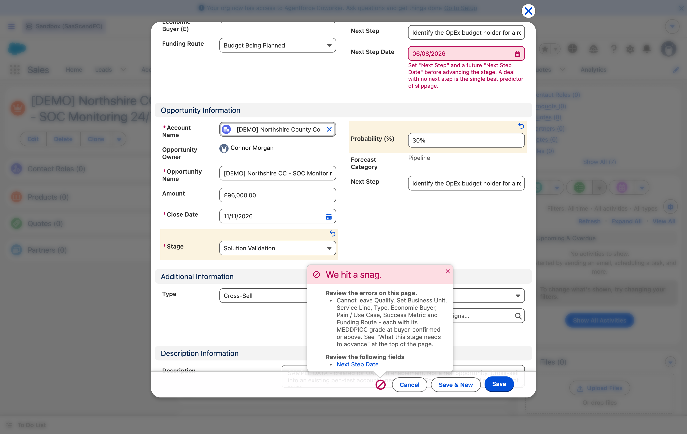

Can my deal move?
Pick the stage your deal is on and tick what you already have. Anything left unticked is what is stopping you.
Tick what you already have. Every stage is listed below if scripting is off — nothing here is hidden from you.
What it looks like when a gate stops you

How to read that error
Salesforce shows “We hit a snag” and then two separate things: the message from the rule, which names every field the stage needs, and Review the following fields, which lists individual fields highlighted in red on the form. Fix the red ones first — they are usually the quick wins.
Moving a deal, click by click
Open the deal and look at the Sales Path across the top. The dark chevron is where you are.
Read Guidance for Success on the right of the Path. It lists this stage’s exit criteria.Faster than any document, and it is generated from the same rules.
Fill the Key Fields shown beside it. These are the ones this stage cares about.
Set a Next Step and a Next Step Date of today or later.Miss this and nothing else you did will let the deal move.
Click Mark Stage as Complete on the Path, or edit Stage directly and Save.
If it refuses, read the message, fix what it names, and save again.The message is written to tell you what to do, not just that something is wrong.
The grade ladders
Most fields are simply filled in or not. The MEDDPICC grades are different: they are a ladder, and each gate has a line partway up it. Nearly every blocked deal is blocked here. Open one to see exactly where its line sits.
Needed to leave Qualify
MEDDPICC — Economic Buyer (E)MEDDPICC_Economic_Buyer__c
- ×Unknown
- ×Not Identified
- ×Assumed / Inferred
- ×Identified by Name & Role
passes from here
- ✓Engaged - Met or Spoken
- ✓Funding Authority Confirmed
Knowing who they are is not the bar. You have to have spoken to them.
MEDDPICC — Identify Pain (I)MEDDPICC_Pain__c
- ×Unknown
- ×Not Discussed
- ×Rep-Observed Pain
- ×Buyer-Acknowledged Pain
passes from here
- ✓Buyer-Articulated in Own Words
- ✓Pain Tied to Business Consequence
They have to say it themselves. Them nodding along to your version does not count.
MEDDPICC — Metrics (M)MEDDPICC_Metrics__c
- ×Unknown
- ×Not Discussed
- ×Pain Acknowledged, Not Quantified
- ×Rep-Estimated Impact
passes from here
- ✓Buyer-Stated Impact
- ✓Buyer-Quantified & Documented
Your estimate of their saving is not a metric. Theirs is.
Needed to leave Solution Validation
MEDDPICC — Champion (C)MEDDPICC_Champion__c
- ×Unknown
- ×None Identified
- ×Supporter Identified
- ×Champion Identified
passes from here
- ✓Champion Confirmed Advocacy
- ✓Champion Selling Internally
- ✓Champion Tested - Has Fought For Us
A supporter likes you. A champion argues for you when you are not in the room.
MEDDPICC — Decision Criteria (D)MEDDPICC_Decision_Criteria__c
- ×Unknown
- ×Not Discussed
- ×Assumed by Rep
passes from here
- ✓Buyer-Stated, Informal
- ✓Buyer-Confirmed, Documented
- ✓Criteria Influenced by Xypher
Informal is enough here — but it has to have come from them.
MEDDPICC — Decision Process (D)MEDDPICC_Decision_Process__c
- ×Unknown
- ×Not Discussed
- ×Assumed by Rep
- ×Steps Known, Timeline Unclear
passes from here
- ✓Steps & Timeline Buyer-Confirmed
- ✓Governance / Committee Route Confirmed
Knowing the steps is not enough without the timeline.
MEDDPICC — Competition (C)MEDDPICC_Competition__c
- ×Unknown
- ×Not Assessed
- ×Assumed - No Known Competitor
- ×Competitors Identified
passes from here
- ✓Buyer-Confirmed Competitive Set
- ✓Differentiation Confirmed by Buyer
On an Open Tender or Mini-Competition, 'Competitors Identified' is accepted — in a blind tender you cannot confirm the field with the buyer.
The pattern behind all of them
The line always sits at the point where the buyer told you, rather than you concluding it. That is the whole design: a grade you assigned yourself is not evidence.
Stage by stage, in order
1 · Qualify
You need Business Unit, Service Line and Type set; an Economic Buyer named and graded; a
Pain / Use Case and Success Metric written and graded; and a Funding Route that is
not No Budget Identified.
2 · Solution Validation — the longest gate
Procurement Route, plus Framework Name if it is a call-off or mini-competition. A Champion named with a confirmed date and grade. Decision Criteria, Decision Process and Competition, each graded.
Two sensible exemptions
- On an
Open TenderorMini-Competition,Competitors Identifiedis accepted — in a blind tender you cannot confirm the competitive set with the buyer. - If Type = Expansion this gate is light-touch: only Economic Buyer and Champion are needed, because an expansion reuses buyer contacts you already have.
3 · Proposal / Bid Submitted
This one gates the way IN, not just the way out
Unless it is a renewal, Bid Decision must be Bid or
Bid - Conditional, with a date and a name, before you can enter the stage.
Pending Review and No Bid will block you. Bidding on everything is how margin
disappears.
To leave: Proposal / Bid Reference, Submission Date (when you submitted, not the portal deadline), Buyer Receipt Confirmed in writing, Evaluation Date, and MEDDPICC Complete.
The one that surprises people
Paper Process Status is one of the eight MEDDPICC elements — so your commercial paper has to be moving before you can leave Proposal.
4 · Negotiation / Commercial Agreement
Verbal Commit Date and Evidence (written or minuted intent to award), Paper Process
Status past Not Started, and Legal Review Status past Not Started
— where Not Required is a legitimate answer on existing terms.
5 · Closed Won
Contract / PO Number · Signed Date · Contract Start · Contract End · Win Reason.
Two things that bite
Contract End Date drives the automatic renewal. Get it right.
Add your products before you close. A won deal with no line items becomes a finance exception and comes back to you.
6 · Closed Lost
Loss Reason · Loss Detail · Competitor Won if you lost to one · Winning Supplier — Other if that competitor is “Other”.
One-way door
A Closed Lost deal cannot be reopened. If it comes back, use Create Re-Tender — it creates a linked new opportunity and keeps the loss history a future win/loss review depends on.